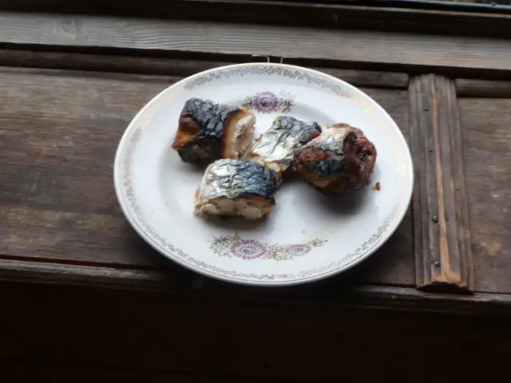

Фото: Леонид Котов, CC BY-SA 4.0

Скумбрия в духовке
Целая скумбрия с луком и лимоном в фольге, сочная и без запаха на всю кухню
40 мин3 порц.630 ккал на порциюБ 55 · Ж 43 · У 5Русская кухня
Продукты на 3 порц.
- Скумбрия3 шт
- Лимон1 шт
- Лук репчатый1 шт
- Растительное масло1 ст. л.
- Сушёные травы1 ч. л.
- Соль2 ч. л.
- Перец чёрный молотый2 щеп.
- Укроп по желанию0,5 пучка
Как готовить
- Скумбрию разморозьте в холодильнике. Отрежьте голову, выпотрошите, удалите тёмную плёнку внутри и промойте.
- Натрите рыбу солью, перцем и травами снаружи и внутри.
- Внутрь положите кольца лука, кружки лимона и укроп.
- Каждую рыбу смажьте маслом и заверните в фольгу, края плотно защипните.
- Запекайте 25 минут при 200 °C (сильный жар).
- Разверните фольгу и подержите ещё 5 минут для румяной корочки. Мясо готово, если легко отходит от хребта.
Совет. Не размораживайте скумбрию в тёплой воде или в микроволновке: мясо станет рыхлым. Лучше переложить в холодильник с вечера.